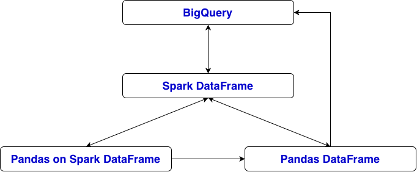
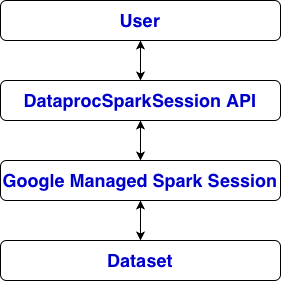

from google.cloud.dataproc_spark_connect import DataprocSparkSession
spark = DataprocSparkSession.builder.getOrCreate() # google.cloud.dataproc_spark_connect.session.DataprocSparkSession
df = spark.read.format('bigquery') \
.option('table', 'housing.housing1') \
.load() # pyspark.sql.connect.dataframe.DataFrame
df.printSchema()
spark.conf.set("spark.sql.ansi.enabled", "false")
df2 = spark.read.format("bigquery") \
.option("table", "housing.housing1") \
.load()
# convert Spark DataFrame to Pandas on Spark DataFrame
psdf = df2.pandas_api() # pyspark.pandas.frame.DataFrame
psdf[:2]
# Spark DataFrame to Pandas DataFrame
df_panda = df.toPandas() # pandas.core.frame.DataFrame
# Pandas DataFrame to Spark DataFrame
df_spark = spark.createDataFrame(df_panda) # pyspark.sql.connect.dataframe.DataFrame
# Pandas on Spark DataFrame to Pandas DataFrame
psdf_pandas = psdf.to_pandas() # pandas.core.frame.DataFrame
# Pandas on Spark DataFrame to Spark DataFrame
spark_df = psdf.to_spark() # pyspark.sql.connect.dataframe.DataFrame
# write Spark DataFrame to BigQuery
spark_df.write \
.format("bigquery") \
.option("table", "project_id.dataset_name.table_name") \
.mode("overwrite") \
.save()
# write Pandas DataFrame to BigQuery
import pandas_gbq
pandas_gbq.to_gbq(
df_panda,
"housing.housing4",
if_exists="replace"
)